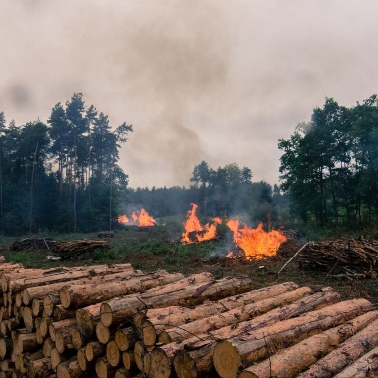
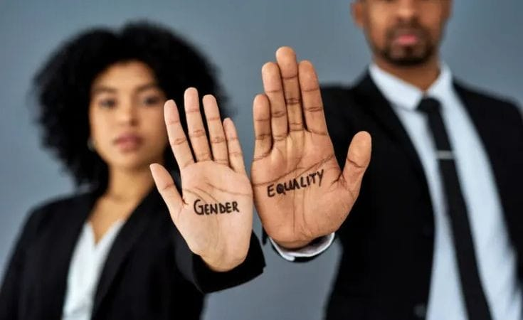
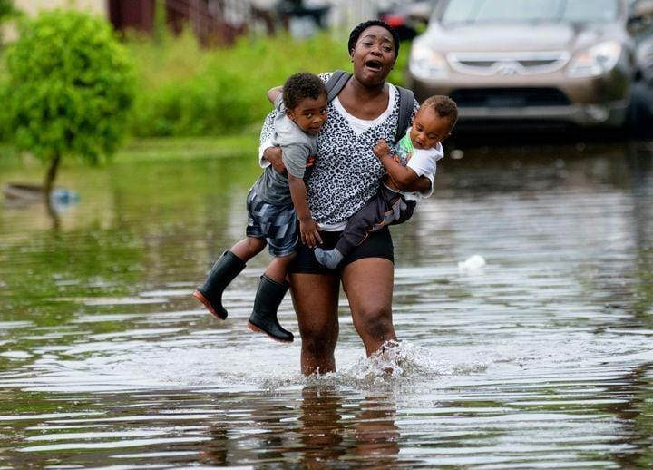

Welcome to our webpage, which focuses on the very crucial relationship between climate change and gender equality. Because Earth continues to face the harsh realities of this crisis, it has become increasingly important that we understand how these environmental challenges disproportionately affect women and marginalized genders. The focus of our mission will be to bring awareness, share insight, and promote actions that empower all people to combat climate change with gender equality in mind. We are fully cognizant that the United Nations SDGs have identified their interlinkages, more so on the goals that related to gender equality and climate action.
Climate change, brought about through human activities like burning of fossil fuels and deforestation, is one of the mist important challenges in this time. Their touches are felt widely: from a global increase in sea levels, damage from more frequent and intense heat waves, storms, and droughts, to reduced food and water availability. Understanding these effects is of great importance, for these risks to ecosystems, livelihoods, and communities. The need to take action on climate change is very crucial, as the consequences will determine the future of our planet. The SDGs demand immediate implementation and, as a matter of fact, underline that no sustainable development is possible unless there is control over the changes in climate and its social consequences.
Gender equality is a concept defined as equal rights, responsibilities, and opportunities for all citizens in the world, without any consideration of gender. Whereas much progress has been achieved so far, large chasms still remain. Discrepancies in educational and employment opportunities still challenge women and marginalized genders in their attempts to achieve adequate representation in the political domain. Achieving equality between genders is not simply a matter of entitlement that all humans deserve but also it is necessary toward sustainability of societies. When opportunities are equally open to all genders, communities will thrive and act better against global challenges. The linkage here to the SDGs makes it clear that gender equality and climate action, far from issues themselves, are about directions intertwined with one another that point toward sustainable development.
This intersection of climate change and gender equality makes it clear that the most brutal effects of environmental degradation usually fall to women. They are generally directly responsible for food, water, and energy and, as such, are more vulnerable during disasters like droughts and floods, which increases inequality even more. The ability to recognize these links is an important part of the solution to the challenges pointed out by the SDGs and for drawing up inclusive policies regarding sustainable development.
| Name | Phone |
|---|